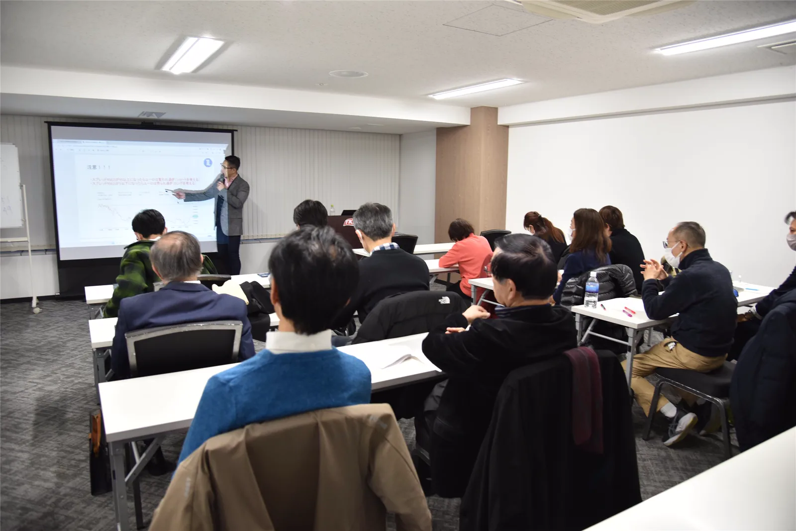
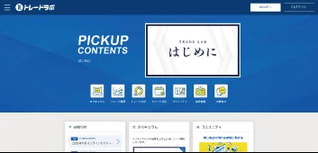
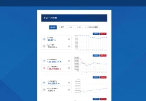
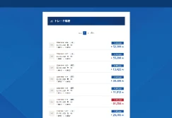
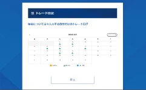
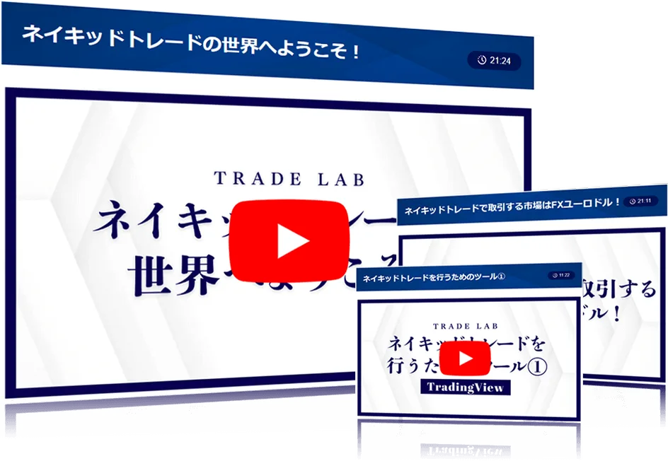
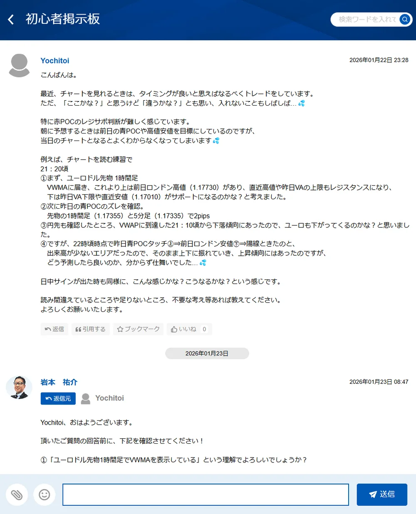
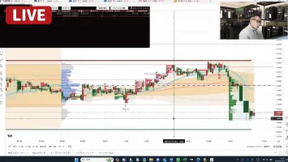
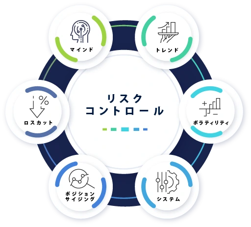

まずは無料ビデオ講座から
トレードLabで学ぶ「ネイキッドトレード」の考え方を、全4回の無料ビデオ講座「ディープインサイド」でお伝えしています。メールアドレスをご登録いただくと、すぐにご覧いただけます。
＼メール登録で特典プレゼント中／
無料ビデオ講座を受け取る
FX（外国為替証拠金取引）のトレードを学びたい方を対象に、「ネイキッドトレード」という手法と、リスクコントロールの考え方を習得していただくことを目的とした、オンラインスクールです。
6ヶ月（180日間）の中でしっかり学びながら、勉強会やライブ配信、会員同士のグループチャットなど、実践で役立つ環境を豊富にご用意しています。

カリキュラムや各種ツールなど、すべてのコンテンツを会員様専用ページからご利用いただけます。

取引所からダウンロードした売買記録を取り込むだけで、ご自身のトレードの傾向（得意な場面・苦手な場面）を確認できます。

これまでのトレードを一覧で振り返ることができます。

日々のトレードの記録をカレンダーで残し、振り返りに活用できます。

ネイキッドトレードの考え方から、エントリー・決済・損切りの判断までを25回のビデオ講座で解説しています。ご自身のペースで進めていただけます。

会員同士でやり取りできるグループチャットです。未経験の方から上級者まで、ステージに合わせたグループをご用意しています。

その日の市場動向や前日の振り返りを、講師の岩本祐介が解説します。
実際の相場をもとにした実践形式の勉強会を開催しています。参加費は無料です。
どれだけ優れた手法でも、守りの考え方がなければ、一度の大きな負けで利益を失ってしまいます。トレードLabでは、次の6つの考え方を「リスクコントロール講座」で学びます。

ネイキッドトレードとリスクコントロールを、全25回のビデオ講座で学びます。ケーススタディも活用し、基本的な考え方を身につけます。
サインを確認しながら、判断基準や相場の捉え方を学びます。ケーススタディを通じて理解を深めます。
デモ口座や小さな資金で実践。トレード記録や勉強会を活用しながら、自分の得意・不得意を把握し、判断力を養います。
6ヶ月の学習期間終了後は、利用を終了することも、継続利用コース（月額5,500円（税込）〜）で学び続けることもできます。
学習の進み具合や理解度は人それぞれ。決められたペースに縛られず、ご自身の生活スタイルに合わせて学習を進められます。
テクニカル分析を学んでも判断があいまいになり、勝ったり負けたりを繰り返して、トータルではマイナスになってしまった。よくあるお話です。
トレードLabでは、手法（ネイキッドトレード）と守りの考え方（リスクコントロール）の両方を、講師と仲間のいる環境で学んでいただきます。焦らずじっくりと、「生涯使えるスキル」を身につけましょう。
| 参加費 | 期間：6ヶ月 | 318,000円 （税込349,800円） |
|---|---|---|
| 継続利用 | 期間：1ヶ月 | 5,500円（税込）〜 |
※ご参加いただく前にサービス・コンテンツの詳細、特定商取引法に基づく表記などをご確認のうえ、決済画面へお進みください。
※お支払い方法は、クレジットカード（一括）または銀行振込（一括）です。
FXは、少ない資金から始められる身近な投資として広まりましたが、知識がないまま始めて損をしてしまったり、続けられずにやめてしまう方が多いのが現実です。
「ボタン一つで稼げる」ような近道がないのは、トレードも同じです。車の運転を覚えるのに教習所へ通うように、トレードにも、身につけるための一般的な努力は必要です。そのかわり、正しい順番で積み上げていけば、努力はきちんと「力」になります。
トレードLabでお伝えしているのは、証券会社で相場の裏側を見てきた経験と、個人トレーダーとしての経験を合わせて作った、40年間の集大成ともいえる手法です。正しい手順で学んだ知識とスキルは、これから続く投資人生を支える「生涯スキル」になります。
一人でチャートと向き合うのではなく、理解が合っているか確かめられる場所、困ったときにすぐ相談できる場所、同じ目標の仲間がいる場所。トレードLabは、そういう環境として作りました。
一人でも多くの方が脱落せずに学び続けられるよう、講師、サポートチーム、そして仲間とともに、全力でサポートしていきます。
岩本祐介
トレードLabで学ぶ「ネイキッドトレード」の考え方を、全4回の無料ビデオ講座「ディープインサイド」でお伝えしています。メールアドレスをご登録いただくと、すぐにご覧いただけます。
＼メール登録で特典プレゼント中／
無料ビデオ講座を受け取る